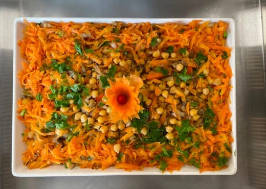

Sobre
Cozinheira formada na prática: quase vinte anos passando por balcões, produção e fogões até se firmar na cozinha. Sabrina construiu sua trajetória em restaurantes e serviços de alimentação, do atendimento ao cliente ao preparo dos pratos — sempre com atenção a quem senta à mesa.
profissional (2006–2025)
registradas
cozinheira ou auxiliar
Cardápio de experiência
Primeiros passos
Os anos de balcão e produção — onde nasceu o gosto por servir bem.
CSN Restaurante (Ásia 70) · 10 meses
CSN Restaurante (Ásia 70) · 3 anos e 8 meses
Dalbo Confecções · 6 meses
Padaria Pane D'France · 4 meses
Na cozinha
A fase em que a cozinha virou ofício: do auxiliar à cozinheira responsável pelo prato do dia.
Apetit Serviços de Alimentação · 8 meses
Restaurante Josélia Carraro · 3 anos e 2 meses
Restaurante Charo · 2 anos e 3 meses
Restaurante Sodexo · 8 meses
Trajetória recente
Uma passagem pela produção, mantendo a mesma dedicação de sempre.
TW Agro · 1 ano e 6 meses
Formação
Ensino Médio Completo
Conclusão em 2004
Ingredientes & qualidades
O que Sabrina leva para qualquer cozinha ou equipe em que atua.
Pratos assinados
Uma pequena vitrine dos pratos preparados ao longo da carreira.


